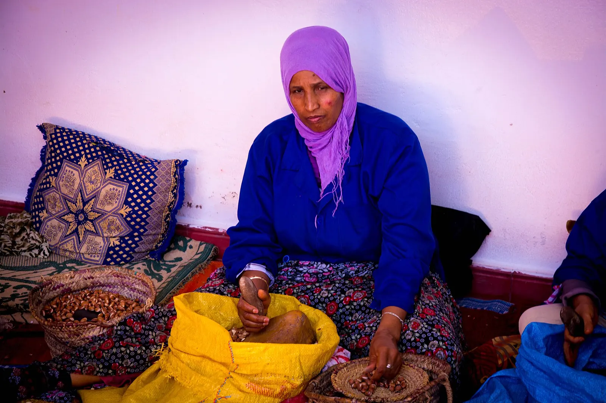
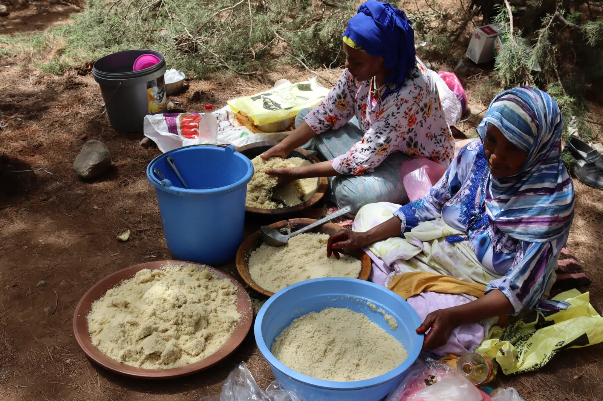

الاعتمادات
الصور ديال الجمعية، والصور الحرة اللي كتبين العالم اللي خدامة فيه.



صور اللقاءات والشعارات والبورتريهات: GIAC Agroalimentaire. صور المنتجات من موقع الجمعية، مكبرة بمعالجة رقمية.
صور حرة
- 4I9A1154, Youssef boussmou, CC BY-SA 4.0
- WheatRoad, Ouadie El farouki, CC BY-SA 4.0
- Tchamp frumint Mdacra, Lucyin, CC BY-SA 4.0
- Triage des olives au Maroc CL J Weber03, inra.dist, CC BY 2.0
- Meknes (2020) 08, Werner100359, CC BY-SA 4.0
- طماطم بييييو, Brahim fadel, CC BY-SA 4.0
- MA.SS.Tafraout 2018-08-15 Sheep-market 1310, Roy Egloff, CC BY-SA 4.0
- Inbound1683028543327506050 05, Tha Hesperian, CC BY-SA 4.0
- L'agriculture en terrasses dans les montagnes du Moyen Atlas au Maroc, Houssain tork, CC BY-SA 4.0
- Argan Oil Cooperative 02, Catalin Dordea, CC BY-SA 4.0
- Inbound1683028543327506050 02, Tha Hesperian, CC BY-SA 4.0
- Chicken and eggs for sale, مصطفى ملو, CC BY-SA 4.0
- ASMR field of wheat - nature, Coup 53, CC BY 3.0


_08.jpg){kind=link}


الخرائط
حدود الجهات 12: مشروع morocco-map، بيانات © المساهمين فـ OpenStreetMap، رخصة ODbL.
الخطوط: Newsreader وMarkazi Text وNoto Naskh Arabic، رخصة SIL Open Font.